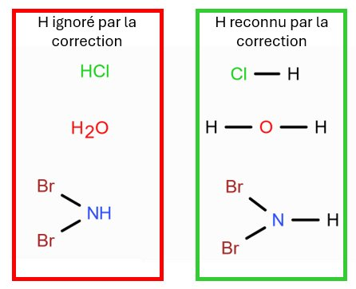

Avant d’utiliser Ketcher, dessinez la structure de Lewis sur une feuille.
Ketcher sert à représenter une structure déjà réfléchie.
Méthode de construction d’un diagramme de Lewis
Calculer le nombre total d’électrons de valence.
Dessiner la structure squelettique :
Les H sont toujours périphériques.
L’électronégativité de l’atome central est inférieure à celle des atomes périphériques.
Oxacides : les H sont liés à O.
Structure compacte (en étoile, pas linéaire, pas de cycle).
Les liaisons avec l’hydrogène doivent être explicitement représentées.
Compléter l’octet des atomes périphériques.
Assigner les électrons de valence restants à l’atome central.
Si l’atome central n’atteint pas l’octet, former des liaisons multiples.
Important — hydrogènes dans Ketcher
La correction automatique tient compte uniquement des atomes
reliés par des liaisons.
Un hydrogène non relié par une liaison est
ignoré par la correction, même s’il est visible.

Questions de raisonnement
Nombre total d’électrons de valence du NHS :
Nombre de doublets libres sur l’atome central :
Structure de Lewis attendue
À l’examen, la structure devra être dessinée sur une feuille et tous les
doublets libres devront être explicitement représentés, comme dans
l’illustration ci‑dessous.